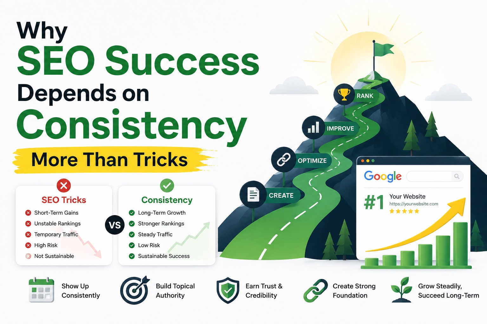
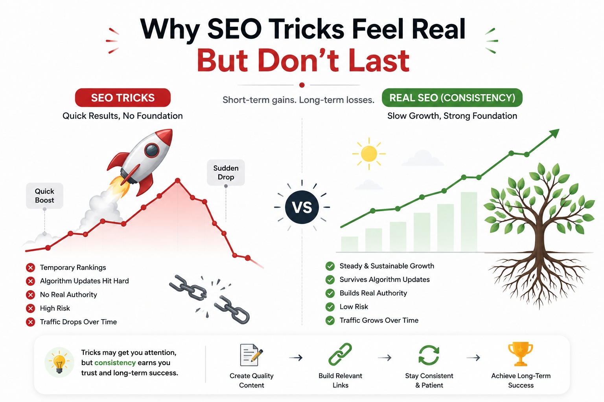
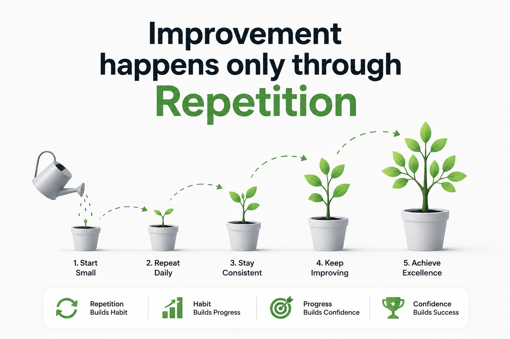

If you observe how SEO actually works in real life — not in theory, not in YouTube advice videos, but real websites that grow steadily over time — you start noticing a very simple pattern.
The websites that succeed in the long run are not the ones chasing constant tricks. They are the ones that keep showing up consistently, publishing useful content, and improving their site step by step without stopping.
This sounds simple, almost too simple, which is exactly why most people ignore it.
Instead, beginners usually believe SEO is some kind of shortcut game. They assume there must be a hidden trick, a ranking hack, or some secret method that can push a website to the top quickly.
And honestly, the internet is full of content that feeds this belief:
- “Quick SEO hack”
- “Rank #1 in 7 days”
- “Secret Google trick”
These ideas feel attractive because they promise speed. But SEO doesn’t really work like that.
The Real Problem: Expectations Are Too Fast
When someone launches a new website or blog, there is usually a lot of excitement in the beginning. Content gets published, basic SEO is done, and then the waiting starts.
But what usually comes next is silence.
No traffic. No rankings. Sometimes even no impressions for a while.
And this silence is where most people lose direction.
Instead of understanding that SEO takes time, they assume something is wrong. Either the strategy is bad, or they are missing a trick that others know.
But in reality, nothing is missing. SEO simply hasn’t had enough time to build signals.
Search engines don’t trust a website immediately. They observe it over time — how often content is published, whether it stays consistent, whether users find it useful, and whether the site keeps growing in a stable direction.
If you stop too early, that entire evaluation process never completes.
Why SEO Tricks Feel Real But Don’t Last

SEO tricks are not completely fake. Sometimes they do show results.
A well-placed backlink might improve visibility. A perfectly optimized page might rank quickly. A keyword adjustment might bring a temporary boost.
So yes, these things can work in short bursts.
But the real issue is stability.
Most trick-based strategies don’t improve the actual foundation of a website. They try to influence surface signals instead of building long-term authority.
And search engines today are much more focused on long-term behavior than short-term spikes.
A website might rise quickly due to a trick, but if the content quality or consistency is weak, that growth usually doesn’t last.
Over time, algorithms adjust. Competition improves. User expectations change.
And whatever was gained through shortcuts slowly disappears.
What Consistency Actually Means in SEO
Consistency is often misunderstood. People think it simply means publishing content regularly, like daily or weekly posts.
But in reality, it goes deeper than that.
Consistency means your website is continuously evolving in a stable direction.
It means you are not randomly switching topics every few days. It means your content follows a clear pattern. It means you are not just publishing and forgetting pages, but also improving older content when needed.
It also means your effort doesn’t stop after initial motivation fades.
Because that is what usually happens — most websites are started with energy, but that energy drops after a few weeks. And that’s where growth usually breaks.
Consistency is what keeps the system alive even when motivation is low.
How Consistency Builds Real Authority
Search engines don’t judge a website based on a single article. They look at patterns across the entire site.
When a website repeatedly publishes content around a specific topic, it slowly starts building topical authority.
For example, if a site keeps writing about SEO-related topics — like keyword research, content strategy, ranking factors, technical optimization — search engines begin to understand that this site is focused and relevant in that space.
But if the same website randomly publishes about SEO one day, fitness the next, and tech gadgets later, the signal becomes unclear.
There is no direction, no depth, no identity.
Consistency solves this by creating clarity.
And clarity is extremely important in SEO because search engines prefer sources that demonstrate depth in a specific subject area.
Improvement Happens Only Through Repetition

Another thing people underestimate is how much consistency improves skill.
The first few articles you write will rarely be your best. That’s normal.
But as you continue creating content, something interesting happens — you start noticing patterns.
You understand what kind of introductions keep readers engaged. You learn which explanations feel clear and which feel confusing. You begin to see what topics actually connect with your audience.
This kind of learning doesn’t happen from reading advice alone.
It happens through repetition.
Without consistency, you never reach that improvement stage because you don’t get enough real feedback from actual work.
But when you stay consistent, your content quality naturally evolves over time without forcing it.
Keep your link review workflow efficient
Spend less time clicking tabs and more time creating quality content with Bulk URL Opener.
SEO is a Long-Term Compounding System
SEO doesn’t behave like paid ads or social media trends. It doesn’t give instant feedback or instant success.
Instead, it compounds slowly.
Every article adds something to your website. Every internal link improves structure. Every update strengthens relevance. Every consistent action adds another layer of trust.
Individually, these changes may feel small. Sometimes even invisible.
But over time, they stack together and create real momentum.
This is why websites that stay consistent for years often dominate search results — even if they are not doing anything “advanced.”
They simply stayed in the game long enough for compounding effects to work.
Strategy Alone is Not Enough
Now, this doesn’t mean strategy is useless.
Direction still matters. If you publish random content without understanding your audience or keyword intent, consistency alone won’t save the site.
But the opposite is also true.
Even the best SEO strategy fails if it is not executed consistently.
Many websites actually don’t fail because of wrong strategy. They fail because they stop too early.
They publish for a short period, don’t see results, and then abandon the process.
SEO doesn’t reward short efforts. It rewards sustained effort.
Final Thought
At its core, SEO is not really about finding tricks. It is about building something that becomes stronger over time.
Tricks can create movement, but they rarely create stability.
Consistency is what turns small efforts into long-term growth. It builds clarity, authority, trust, and improvement — all things that search engines value deeply.
And more importantly, it ensures that your website keeps progressing even when results are slow.
Because in SEO, the biggest difference between success and failure is not who starts better. It is who stays consistent long enough to let their efforts compound over time.